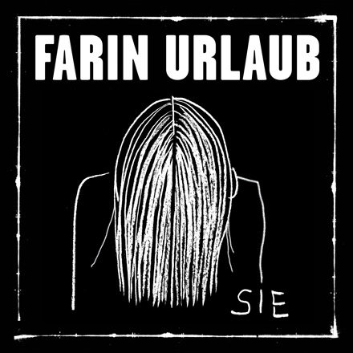

Review
FARIN URLAUB - Sie

Farin Urlaub denkt. Ich gähne. Und am Ende sage ich trotzdem: Danke.
Boah.
Wie langweilig.
Musikalisch passiert bei "Sie" ungefähr so viel wie an einer Supermarktkasse an einem Dienstagvormittag.
Alles plätschert vor sich hin.
Sanft.
Träge.
Fast melancholisch.
Keine Höhen.
Keine Tiefen.
Wäre das irgendein anderer Künstler gewesen, hätte ich vermutlich nach anderthalb Minuten auf "Weiter" geklickt.
Ist es aber nicht.
Es ist Farin Urlaub.
Und der Kerl hat mich über ein paar Umwege eben doch mit geprägt. Also habe ich mir den Song bis zum Ende gegeben.
Zum Glück.
Denn die eigentliche Geschichte beginnt erst dort.
In der letzten Einstellung hält Farin das Buch "The Art of Uncertainty" des Statistikers David Spiegelhalter in die Kamera. Ein Buch darüber, wie unser Gehirn aus Zufällen Geschichten baut, Zusammenhänge erfindet und aus kleinen Beobachtungen ganze Welten entstehen lässt.
Plötzlich ergibt der Song Sinn.
Die Frau an der Supermarktkasse ist gar nicht die Hauptfigur.
Die Hauptfigur ist der Kopf des Erzählers.
Eine Zahl an der Kasse reicht und die Gedanken springen zu Jeanne d'Arc, zur Schlacht von Jargeau, in den Hundertjährigen Krieg und wieder zurück zwischen Kassenband und Einkaufswagen.
So funktioniert unser Gehirn.
Zumindest manchmal.
Dass Farin Urlaub mehr ist als der Blödel-Barde von Die Ärzte, muss man eigentlich niemandem erzählen. Der Mann liest, beobachtet, denkt und hinterfragt seit Jahrzehnten die Welt.
Nur versteckt er das meistens hinter einem Grinsen.
Ich finde den Song trotzdem nicht besonders spannend.
Aber die Idee dahinter ...
... die hätte locker das Zeug für eine Kolumne.
Vielleicht ist genau das der Trick.
Erst wirkt alles wie ein Lied über eine Frau an der Kasse.
Dann steht man plötzlich mitten in diesem absurden Kopfkino, in dem Alltag, Wartezeit, Geschichte, Statistik und Pferdesport in denselben Einkaufswagen fallen.
Farin nennt "Sie" die dritte Single aus dem kommenden Album "Ein Lächeln im Gesicht", das am 4. September 2026 erscheinen soll. Rote Vinyl, rote Kassette, rote CD. Alles sehr rot. Sehr konsequent. Wahrscheinlich auch gut sichtbar, falls man beim Warten an der Kasse geistig abschweift.
Das Video gibt es hier auf YouTube.
Allein für den letzten Gedanken hat sich das Durchhalten bis zur letzten Einstellung gelohnt.
Danke für den Song.
Prost.